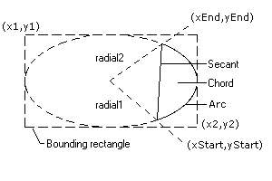

The report generator intelligently interprets the semantics of the datastream to create page breaks automatically.
If the report layout specifies a repeating field, then a page break is forced when all available slots on the page for that field have been populated.
If the report layout specifies a non-repeating field, for example the sales order number, then a page break is forced whenever a sales order number occurs in the datastream. The application can force a page break by writing a non-repeating blank field to the datastream, once for the first page, and again each time the application needs to force a page break.
Header and footer areas of the report are intuitively defined - simply those parts of the layout with non-repeating fields.
Ocassionally it is necessary to intersperse repeating lines with optional lines, for example a sales order line may have associated batch, comment, and serial numbers. On a sales order summary report, both the order header and detail line information must be treated as repeating detail. Therefore on the report layout we need to specify that such fields repeat over the same area of the page, but obviously they should not over- print each other either during report layout design or when the report is printed.
This is achieved using variant fields.
Variant fields are defined with both a variant set and a variant number. All fields in a variant set must repeat the same number of times. Note that repeat fields without a variant specified must also repeat the same number of times. If, for example, an order page may contain up to 20 product lines, but a tax code table on the same page (similarly addresses or delivery instructions) might only repeat five times, then a variant set must be used to prevent an error being reported.
When a field is placed in one of the repeat slots on a variant field, then the matching repeat slots on all other variant fields in the same set but with a different variant number are marked as used, to prevent overprinting. This difficult concept is best illustrated with an example, shown on different lines for clarity:
OIprod OIdesc -- variant{1,1} repeats 10 times
SSserl -- variant{1,2} repeats 10 times
When a serial number occurs in the datastream, and the next available slot in the
variant set is n(1..10), then the slots for OIprod[n] and OIdesc[n] are marked as
used, as well of course as the slot for SSserl[n] being marked as used.
A following OIprod/desc would be automatically placed in OIprod/OIdesc[n+1], and SSerl[n+1] likewise marked used so OIdesc and SSerl do not overprint each other.
Explanatory note: In the above example, an OI record is a sales order detail line, with the field OIprod holding a product code and OIdesc a product description. The SSserl field(/record) holds a serial number just like the one on the back of a TV or radio.
In the report layout editor, variant fields are displayed on the screen using the variant number, so in a set of ten repeating lines, variant 1 is displayed on the first line, variant 2 on the second, and so on. Hence, as shown above, the SSserl definition is shown during report layout design below OIdesc, but actually starts repeating from the same place. Once all variants have been displayed, variant one is shown in the remaining repeat slots for the variant set.
Variant handling does not apply to non-repeating fields.
This option allows the calling application to regain control once the page table has been built, but before the preview is displayed or the report is printed.
Before passing the datastream to the generateReport() routine, the application calls pageSequenceHook() with the routine_id of a parameterless procedure.
This procedure can save a copy of the global variable pagetable and set it to -1 to suppress further activity, and resume processing following the call to generateReport(), or re-order and/or combine the pagetable with previous saved page tables which is then previewed and/or printed as one report.
This technique allows cover pages, different styles and layouts for various parts of the report, breakdowns and summaries, to be created.
Another use for the page sequence hook is booklet printing. For example six pages can be resequenced as {{},[1],[2],{},[6],[3],[4],[5]} and printed in 2-up mode. There are several ways to achieve this effect; the above is useful when printing the masters before using a double sided photocopier; the example in pptest.exw relies on manual feed, and flipping the paper at the mid-point of the printout.
When a report is printed in fragments, naturally the page numbering may be wrong. The application must manually correct this if needed, see the next section.
Occasionally, it may be easier to define a report programatically rather than manually placing each item on the layout, or if the layout is very fluid. An example might be a complicated form with hundreds of small checkboxes.
The application may use a dummy layout which prints a single field, and use the pageSequenceHook() procedure to craft a completely new pagetable. (TIP: create a very rough sketch layout, with a few examples, say the top left and the bottom right checkboxes, and pretty_print the pagetable from your pageSequenceHook routine, as a starting point.)
Each page in the pagetable is a header record followed by a simple list of fields, each of which is:
L-type : Graphic=1, Bitmap=2, Text=3
L_pos : {x,y[,xto,yto]}
Only {x,y} are given for text fields.
The values are in Gry.
L_font : an internal integer reference, but see below
L_text : Text: format string, eg Page %d of %d
Graphic: Rectangle not present
RoundRectangle: {2,xc,yc}
Line: 3
Ellipse: 4
(See below for Arcs and Chords)
Bitmap: handle from loadBitmapFromFile()
L_flds : List of fields to be printed
L_flags : No longer required, ignore
Please note the above definition is subject to change in future releases.
L_pos is in gry, a fraction of width and height (1..100000). For example, a rectangle defined at {45000,45000,10000,10000} is the same shape as the paper, 10% of the size, drawn in the centre of the page.
In fact, L_pos holds additional detail such as repeating and variant details, which are no longer relevant by the time the pageSequenceHook routine is called.
Text (not graphics or bitmaps) may be rotated by passing a slope value in L_pos[11], between 0 and 3600. The length of L_pos must be 11, zero fill any missing elements, as shown in procedure plain() in pptest.exw.
Arcs and Chords may be drawn by passing {5,xstart,ystart,xend,yend} or {6,xstart,ystart,xend,yend} respectively in L_text. However the values passed should be in Gry (1..100000) and this feature is not officially supported. The following diagram (courtesy of Brian Broker) may or may not be helpful:
|  |
L_flags is used during the creation of the table and is no longer used or needed (it is much slower to strip it out after the build stage than simply leave it in the table, unreferenced). It may or may not be present.
It is probably unwise to attempt any changes to the header record.
The L_font values in the pagetable refer to an internal font table which is not available to the calling application. The fonts may however be replaced by a sequence as follows:
| Text | {face,size,attributes,colour} eg {"Arial",12,Bold,Black} |
|---|---|
| Graphic | {0,pen,style,colour} eg {0,5,DotDash,Blue} |
| Bitmap | {0,0,Paintmode,Greyscale} eg {0,0,SrcCopy,#1A1A1A} |
Note that Paintmode should be SrcCopy when Greyscale is not 0. Greyscale should be an rgb() value with red,green,and blue settings at the same value.
Naturally, validation on returned pagetables is very limited, so use this feature at your own risk!
No calculated or standard fields may be used in this case.
Blank pages may be represented in the new page table with the empty sequence, {}. Note that an application programmer would force a blank page by printing a single blank field, when creating a report from a predefined layout, plus there is a header on every page. Hence this will be the representation of a blank page in the passed page table.
Make an unaltered copy of an existing header record for any new pages.
Table of Contents Previous Page - Reference Section Part 3 Next Page - Reference Section Part 5